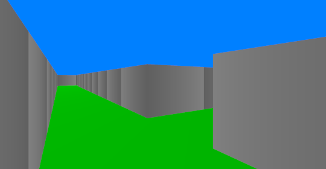
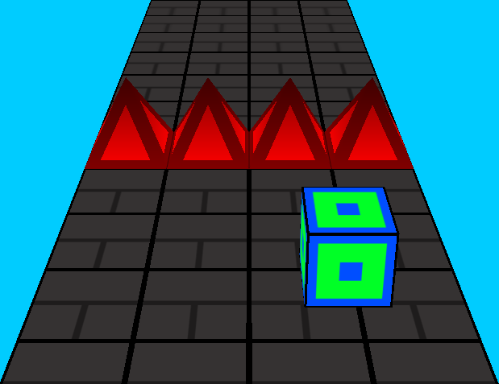
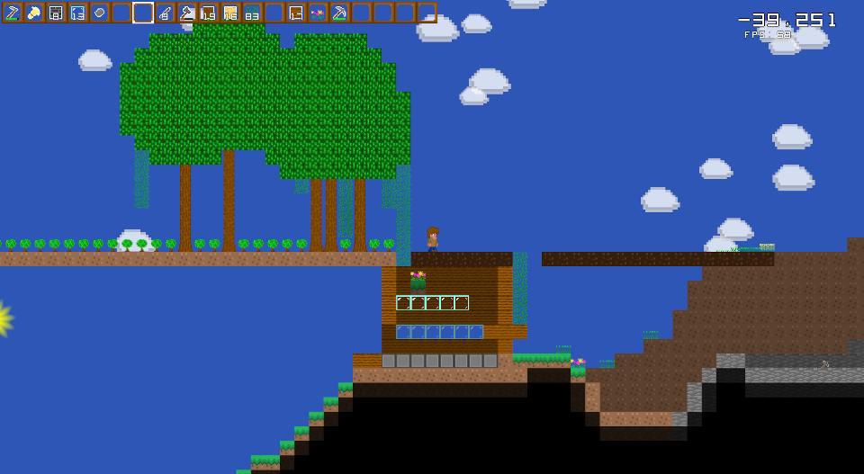

3D Maze Game

This was a small and simple little game that I made in 2021 to test my knowledge of OpenGL.
I made this a while back when I was learning the basics of OpenGL and I thought it would
be cool if I could create a simple little maze game that would display some of the things
that I learned. I initially wanted the maze to be hand crafted but that proved too much work
for just one level so I decided to instead procedurally generate the maze and after some work,
I was able to get the maze generation to kind of work. I added some spinning yellow cubes that
I called "coins" even though there is no score in the game and the coins are basically useless
and generate only in dead ends. I had a decent amount of fun creating this project and you
can browse the source code here and you
can view the gameplay video along with the
code explanation video on my YouTube.
Controls/Important Notes:
- Use the left/right/down/up arrow keys to move around
- The space bar can be used to jump and peek over the walls
- Find the spinning rainbow cube to beat the maze and new maze will be generated
Important: The folder "shaders" must be in the same
directory as the executable or there must at least be link to it.
Download for Linux
Download for Windows
C-Tetris "Tetromino Game"

This is a quick little Tetris clone that I made using C (Hence the name, C-Tetris)
and OpenGL.
I originally made this game for fun and also as a little challenge (I wanted to test
my OpenGL knowledge and I was more used to C++ rather than C). It was difficult at
times but I am very happy with the way the final product turned out. The code is also
open-source on GitHub
and you are free to use my code for any purpose and I don't have any conditions
on what you can or cannot do with it (however, credit would be appreciated and
I would also love to see any improvements or new features you add to my code).
Controls/Important Notes:
- Use the left/right arrow keys to move the tetromino around.
- The space bar can be used to do a hard drop on the current tetromino.
Important: The folder "shaders" must be in the same
directory as the executable or there must at least be link to it.
Download for Linux
Download for Windows
GeoDash-3D

This is a 3D game that I made in OpenGL that is inspired by the popular mobile game
Geometry Dash.
I made this game to test my skills with OpenGL as I have learned how to use textures
in OpenGL and also I learned how to use mutliple models in OpenGL as well. I
therefore made this game to test my knowledge that I have learned. Additionally,
the game and
editor are open source
on GitHub and are licensed under GPLv2. Also just for fun, I added some sound
files generated using sfxr
which are played using the library
openal-soft.
Controls/Important Notes:
- Use A/D to move the player cube left and right
- Use the space bar to jump
- To move around in the editor use the W,A,S, and D keys
- Use Space/Shift to move up and down in the editor
- To rotate the camera in the editor, use the mouse
- To place an object in the editor, use the right click button and to destroy
something, use the left click button.
- To enter "view" mode in the editor press "1" and to enter the "edit" mode in
the editor press "2"
- Use the scroll wheel in the editor to change the current item you are going
to place down
- Use CTRL+E to save the level to a file
- Press the ESCAPE key to pause the game or editor
Important: The folder "res" must be in the same directory as
the executable or there must at least be link to it.
Download for Linux
Download for Windows
OpenGL Mandelbrot Set

This was a quick and short project that I made using OpenGL where I wanted to try
drawing the Mandelbrot Set using the GPU. The program does get fairly slow when
you zoom in too far but probably should run better if you have stronger hardware.
You can browse the source code here.
Controls:
- Pan with mouse by holding down left click and moving cursor around
- Zoom in by scrolling up and zoom out by scrolling down
Download for Linux
Download for Windows
TerraTest

Clone of Terraria written in C. Game is open source under MIT license, you can browse
source code here. I made this during
my sophomore year of high school (2022- 2023) and I'm mostly happy with how the game
looks. I want to work on other projects so it might be a while before this game is
updated again but I do intend on improving parts of the game that I am not particularly
satisfied with (fixing performance, fixing bugs, adding new features, cleaning up
code, etc).
Controls:
- A,D to move around
- Space to jump
- W,S to climb a ladder
- Tab to open crafting menu
- Up/Down arrows to scroll through crafting menu
- Enter to craft item
- Right click to place blocks
- Left click to break blocks/attack enemies
- Scroll wheel to move through inventory
Download for Linux
Download for Windows